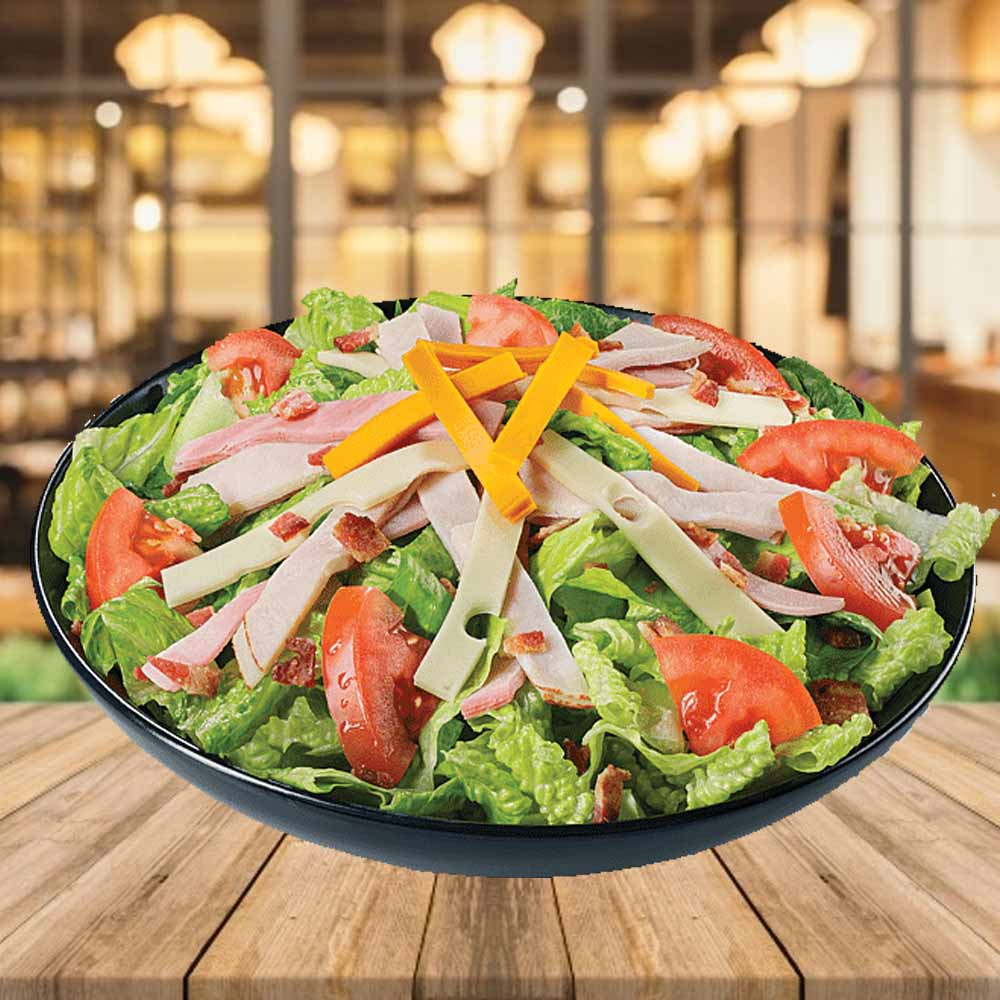

Inicio
Postres
Ensaladas
Platillos
Bebidas
Ingredientes para preparar Ensalada del Chef:
Sigue los pasos de esta receta para preparar esta deliciosa
Enzalada del Chef.
Ingredientes:
1 lechuga sangria desinfectada y troceada
1 lechuga escarola desinfectada y troceada
200 g de Queso manchego cortado en cubitos
1 pechuga de pollo cocida y deshebrada
3 huevos pelados,cocidos, cortados en cuartos
3 jitomates lavados y cortados en gajos
200 g jamon de pavo cortado en tiras
6 cucharadas de Jugo Sazonador Maggi Reducido en Sodio
1 taza de aceite de oliva
1 cucharadita de pimienta negra molida
1/4 taza de jugo de limon
4 cucharadas de Salsa Tipo Inglesa Maggi
pasos de preparacion:
1
.
En una ensaladera mezcla las lechugas. De forma decorativa coloca el resto de los ingredientes y reserva.
2
.
Para la vinagreta en un tazon, mezcla el Jugo Sazonador Maggi Reducido en Sodio con el resto de los ingredientes y sirve con ensalada.